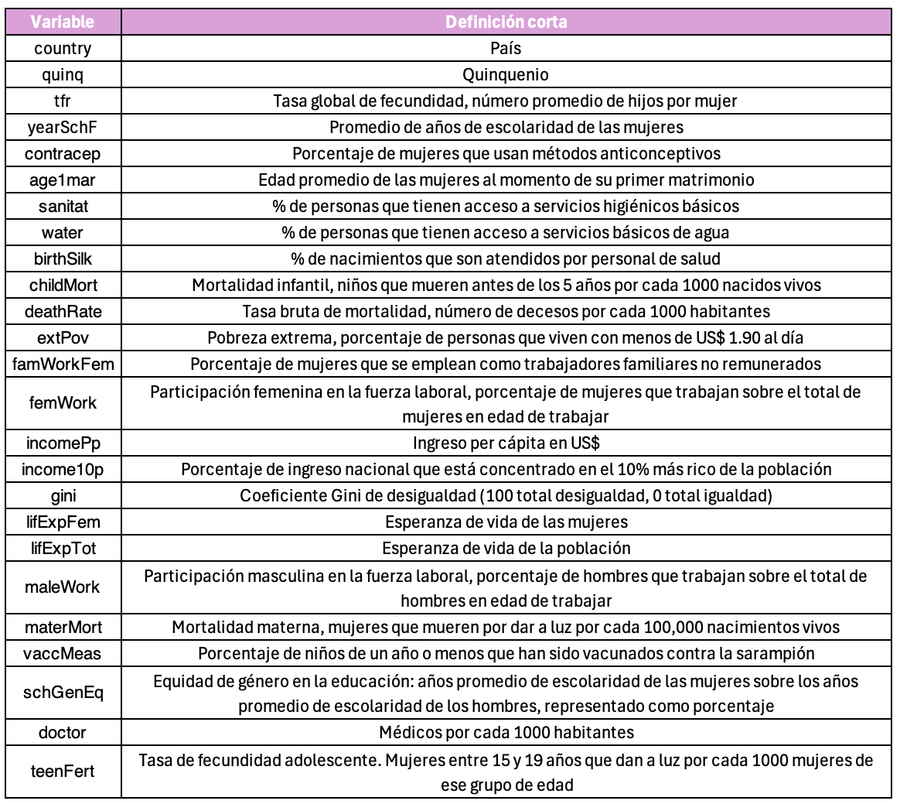
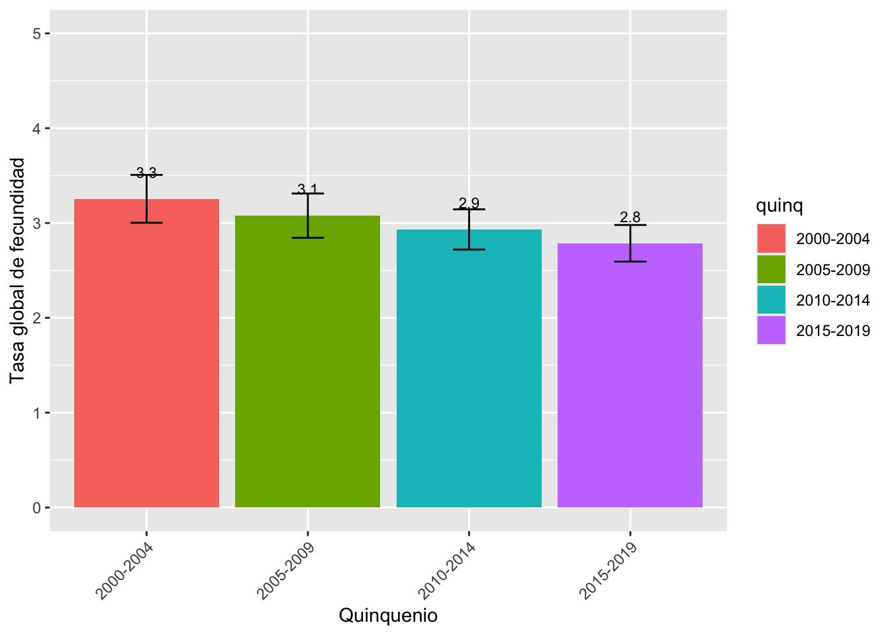
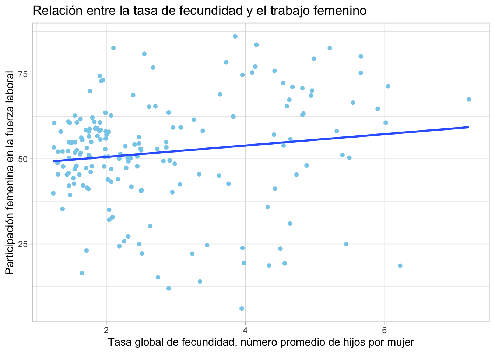
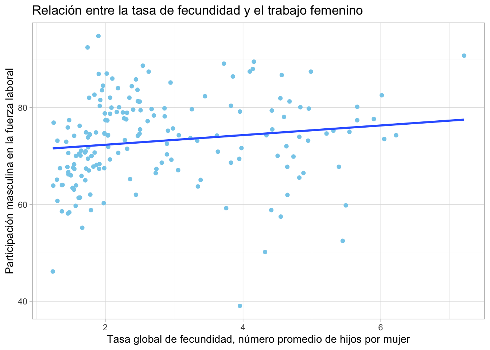
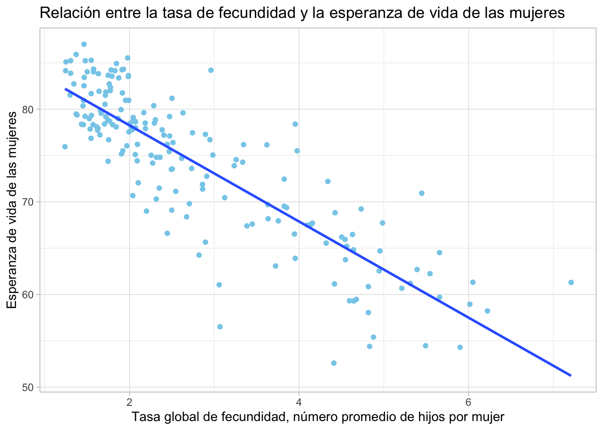
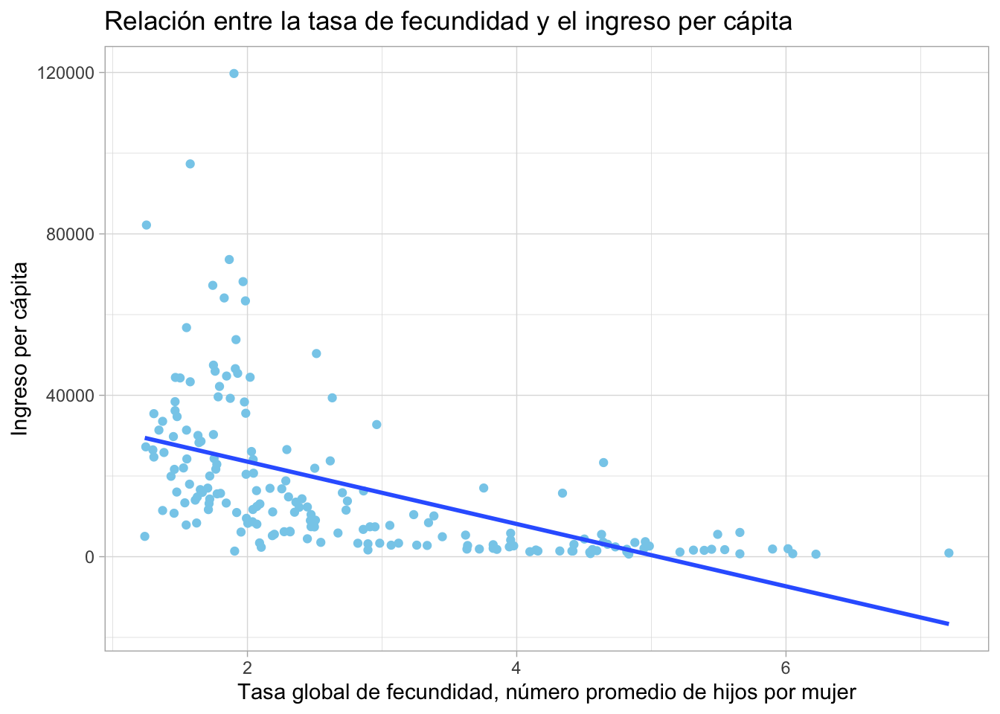

Práctica Dirigida 6
FACULTAD DE CIENCIAS SOCIALES - PUCP
Curso: SOC294 - Estadística para el análisis sociológico 1
Semestre 2024 - 2
ANOVA
¿Qué es el Análisis de Varianza (ANOVA)?
Es una prueba estadística que permite comparar la media (promedio) de más de 2 grupos. Es decir, es como una prueba T, pero de más de dos grupos.
Al igual que con la prueba T, en esta oportunidad debemos observar el p-value de la prueba. Para ello, se establecen 2 hipótesis:
H0 (p-value > 0.05): no hay diferencia significativa entre las medias de ningún grupo. H1 (p-value =< 0.05): al menos una media poblacional (de un grupo) es significativamente distinta a las otras
Estadístico F
Indica la variablidad entre grupos y dentro de un mismo grupo.
Si F es grande, hay mucha variabilidad entre grupos y poca variabilidad dentro de un mismo grupo. Si F es pequeño, hay poca variabilidad entre grupos pero mucha variabilidad dentro de un mismo grupo.
Prueba Tukey
Prueba “post-hoc” (luego de), realizada para revisar entre qué grupos existe una diferencia significativa.
OJO: como es una prueba complementaria a la ANOVA, solo resulta necesaria si se rechaza la H0 en ANOVA. Si la H0 no se rechaza en ANOVA, no hay necesidad de hacer prueba Tukey.
Al igual que las otras pruebas estadísticas, se debe ver el p-value en cada emparejamiento

library(rio)
data=import("dataWorld_q.rda")¿Existe diferencias en la tasa de fecundidad según la quinquenio (entre el 2000 y el 2019)?
Observemos algunos estadísticos descriptivos.
library(tidyverse)## Warning: package 'ggplot2' was built under R version 4.2.3## ── Attaching core tidyverse packages ──────────────────────── tidyverse 2.0.0 ──
## ✔ dplyr 1.1.3 ✔ readr 2.1.4
## ✔ forcats 1.0.0 ✔ stringr 1.5.0
## ✔ ggplot2 3.5.1 ✔ tibble 3.2.1
## ✔ lubridate 1.9.2 ✔ tidyr 1.3.0
## ✔ purrr 1.0.1
## ── Conflicts ────────────────────────────────────────── tidyverse_conflicts() ──
## ✖ dplyr::filter() masks stats::filter()
## ✖ dplyr::lag() masks stats::lag()
## ℹ Use the ]8;;http://conflicted.r-lib.org/conflicted package]8;; to force all conflicts to become errorslibrary(lsr)
library(dplyr)
data <- data %>%
filter(quinq %in% c("2000-2004", "2005-2009", "2010-2014", "2015-2019"))
tabla1 = data %>%
group_by(quinq) %>%
summarise(Media = mean(tfr, na.rm = T),
Mediana = median(tfr, na.rm = T),
Desviacion = sd(tfr, na.rm = T),
Inferior = ciMean(tfr, na.rm = T)[1],
Superior = ciMean(tfr, na.rm = T)[2])
tabla1## # A tibble: 4 × 6
## quinq Media Mediana Desviacion Inferior Superior
## <fct> <dbl> <dbl> <dbl> <dbl> <dbl>
## 1 2000-2004 3.25 2.72 1.74 3.00 3.51
## 2 2005-2009 3.08 2.57 1.61 2.84 3.31
## 3 2010-2014 2.93 2.41 1.46 2.72 3.14
## 4 2015-2019 2.79 2.30 1.33 2.59 2.98Veámoslo en gráficos
library(ggplot2)
ggplot(tabla1, aes(x=quinq, y=Media, fill = quinq))+
geom_bar(stat="identity")+
geom_errorbar(aes(ymin=Inferior, ymax=Superior), width=0.2)+
geom_text(aes(label=paste(round(Media, 1))), vjust=-2, size=3)+
xlab("Quinquenio") + ylab("Tasa global de fecundidad")+
ylim(0, 5) +
theme(axis.text.x = element_text(angle = 45, hjust = 1))
Realicemos un ANOVA
anova1 = aov(data$tfr ~ data$quinq)
summary(anova1)## Df Sum Sq Mean Sq F value Pr(>F)
## data$quinq 3 22.2 7.402 3.121 0.0255 *
## Residuals 732 1736.3 2.372
## ---
## Signif. codes: 0 '***' 0.001 '**' 0.01 '*' 0.05 '.' 0.1 ' ' 1
## 40 observations deleted due to missingnessObservamos que el p-value es menor a 0.05, lo que significa que al menos un grupo tiene la media estadísticamente significativa respecto del resto.
Para saber qué media es distinta, aplicamos la prueba Tukey.
comparacion = TukeyHSD(anova1)
comparacion## Tukey multiple comparisons of means
## 95% family-wise confidence level
##
## Fit: aov(formula = data$tfr ~ data$quinq)
##
## $`data$quinq`
## diff lwr upr p adj
## 2005-2009-2000-2004 -0.1772826 -0.5907450 0.23617975 0.6871398
## 2010-2014-2000-2004 -0.3226739 -0.7361363 0.09078845 0.1853354
## 2015-2019-2000-2004 -0.4687799 -0.8822423 -0.05531753 0.0189101
## 2010-2014-2005-2009 -0.1453913 -0.5588537 0.26807105 0.8019407
## 2015-2019-2005-2009 -0.2914973 -0.7049596 0.12196508 0.2668386
## 2015-2019-2010-2014 -0.1461060 -0.5595683 0.26735638 0.7995750solo la comparación 2015-2019 vs. 2000-2004 tiene un valor p ajustado de 0.0189, que es menor que 0.05, lo cual indica que esta diferencia es estadísticamente significativa.
Diagramas de dispersión y correlación
Ideas clave
La correlación es en esencia una medida normalizada de asociación o covariación lineal entre dos variables.
La correlación es una medida de la relación (covariación) entre dos variables cuantitativas.
La manera más sencilla de saber si dos variables están correlacionadas es determinar si co-varían (varían conjuntamente).
Es importante hacer notar que esta covariación o relación no implica necesariamente causalidad: La correlación puede ser fortuita, como en el caso clásico de la correlación entre el número de venta de helados e incendios, debido al efecto de una tercera variable, la temperatura ambiental. A este tipo de relación se le llama “espuria”.
Hipótesis de la prueba de correlación
- H0 : No existe correlación entre las variables
- H1 : Existe correlación entre las variables
Coeficiente de Correlación de Pearson
“El Coeficiente de Correlación de Pearson es un estadístico paramétrico, pues se asume que ambas variables tienen una distribución aproximadamente normal, o sea, distribución normal bivariante”.
Es una medida que puede variar entre -1 y +1, ambos extremos indicando correlaciones perfectas, negativa y positiva respectivamente.
Un valor de r = 0 indica que no existe relación lineal entre las dos variables.

Gráfico de dispersión

Otros ejemplos:

Aplicación práctica
¿Que factores se relacionan con la tasa de fecundidad en los países entre los años 2015-2019?
Como vimos anteriormente, nuestra data abarca distintos periodos. Analicemos los factores que se relacionan con la tasa de fecundidad en el periodo más reciente: 2015-2019
Primero revisemos como está escrito y luego filtremos
table(data$quinq)##
## 1950-1954 1955-1959 1960-1964 1965-1969 1970-1974 1975-1979 1980-1984 1985-1989
## 0 0 0 0 0 0 0 0
## 1990-1994 1995-1999 2000-2004 2005-2009 2010-2014 2015-2019 2020+
## 0 0 194 194 194 194 0data2 = data %>%
filter(quinq=="2015-2019")Ahora sí, analicemos!
¿Existe una relación entre la tasa de fecundidad y el trabajo femenino?
Paso 1: Exploramos variables de interés
data2 %>%
summarize(Min = min(tfr, na.rm = TRUE),
Media = mean(tfr, na.rm = TRUE),
Mediana = median(tfr, na.rm = TRUE),
Max = max(tfr, na.rm = TRUE))## Min Media Mediana Max
## 1 1.2375 2.786209 2.29875 7.21data2 %>%
summarize(Min = min(femWork, na.rm = TRUE),
Media = mean(femWork, na.rm = TRUE),
Mediana = median(femWork, na.rm = TRUE),
Max = max(femWork, na.rm = TRUE))## Min Media Mediana Max
## 1 6.03 51.9302 52.95 86.05Paso 2: Realizamos el gráfico
ggplot(data2, aes(x=tfr, y=femWork)) +
geom_point(colour="skyblue") + xlab("Tasa global de fecundidad, número promedio de hijos por mujer") + ylab("Participación femenina en la fuerza laboral") +
ggtitle("Relación entre la tasa de fecundidad y el trabajo femenino") +
theme_light()+ geom_smooth(method=lm,se=F)## `geom_smooth()` using formula = 'y ~ x'## Warning: Removed 15 rows containing non-finite outside the scale range
## (`stat_smooth()`).## Warning: Removed 15 rows containing missing values or values outside the scale range
## (`geom_point()`).
Paso 3: Realizamos el ANOVA
cor.test(data2$femWork, data2$tfr)##
## Pearson's product-moment correlation
##
## data: data2$femWork and data2$tfr
## t = 1.9083, df = 177, p-value = 0.05798
## alternative hypothesis: true correlation is not equal to 0
## 95 percent confidence interval:
## -0.004791544 0.282764344
## sample estimates:
## cor
## 0.1419805p < 0.05 Rechazas la H0 (por lo tanto, sí hay correlación)
P > 0.05 No rechazas la H0
¿Qué nos dice el resultado? Recuerda que en la interpretación no debe faltar: (i) intepretación del p-valor y (ii) interpretación del coeficiente de correlación (cor)
Reporte: Dado que el p-valor es mayor a 0.05, no hay evidencia suficiente para rechazar la H0. Por lo tanto, podemos afirmar que no existe correlación entre el porcentaje de mujeres que trabajan y la tasa de fecundidad
¿Existe una relación entre la tasa de fecundidad y el trabajo masculino?
data2 %>%
summarize(Min = min(maleWork, na.rm = TRUE),
Media = mean(maleWork, na.rm = TRUE),
Mediana = median(maleWork, na.rm = TRUE),
Max = max(maleWork, na.rm = TRUE))## Min Media Mediana Max
## 1 39.05 73.09888 73.95 94.75ggplot(data2, aes(x=tfr, y=maleWork)) +
geom_point(colour="skyblue") + xlab("Tasa global de fecundidad, número promedio de hijos por mujer") + ylab("Participación masculina en la fuerza laboral") +
ggtitle("Relación entre la tasa de fecundidad y el trabajo femenino") +
theme_light()+ geom_smooth(method=lm,se=F)
cor.test(data2$maleWork, data2$tfr)##
## Pearson's product-moment correlation
##
## data: data2$maleWork and data2$tfr
## t = 1.9935, df = 177, p-value = 0.04775
## alternative hypothesis: true correlation is not equal to 0
## 95 percent confidence interval:
## 0.001544092 0.288582943
## sample estimates:
## cor
## 0.1481828Se puede apreciar que, al igual que con el trabajo femenino, el p-valor es menor a 0.05, por lo que se rechaza la H0. El coeficiente es de 0.21, lo que indica una correlación positiva pequeña.
Entonces, a mayor número promedio de hijos, aumenta la participación de la fuerza laboral, tanto de hombres como mujeres. ¿Cuál podría ser una posible explicación? Se puede pensar en la necesidad de suplir las demandas que requieren los hijos en términos monetarios, lo que lleva a un mayor trabajo. Se puede pensar en las políticas públicas de apoyo y como estas permiten continuar trabajar a los padres de familia. ¿Alguna otra posible explicación?
¿Existe una relación entre la tasa de fecundidad y la esperanza de vida de las mujeres?
data2 %>%
summarize(Min = min(lifExpFem, na.rm = TRUE),
Media = mean(lifExpFem, na.rm = TRUE),
Mediana = median(lifExpFem, na.rm = TRUE),
Max = max(lifExpFem, na.rm = TRUE))## Min Media Mediana Max
## 1 52.6 74.16875 76.3 87Podemos apreciar que la esperanza de vida de las mujeres entre países tiene un rango de 35 años entre el menor valor y el mayor. En la mayoría de los países, este valor supera a los 76 años.
ggplot(data2, aes(x=tfr, y=lifExpFem)) +
geom_point(colour="skyblue") + xlab("Tasa global de fecundidad, número promedio de hijos por mujer") + ylab("Esperanza de vida de las mujeres") +
ggtitle("Relación entre la tasa de fecundidad y la esperanza de vida de las mujeres") +
theme_light()+ geom_smooth(method=lm,se=F) El gráfico nos permite observar que existe una relación inversa entre las variables, además se puede esperar que esta relación sea grande ya que la mayoría de puntos se están ajustando a la recta que se modela.
cor.test(data2$tfr, data2$lifExpFem)##
## Pearson's product-moment correlation
##
## data: data2$tfr and data2$lifExpFem
## t = -21.932, df = 182, p-value < 2.2e-16
## alternative hypothesis: true correlation is not equal to 0
## 95 percent confidence interval:
## -0.8871151 -0.8064711
## sample estimates:
## cor
## -0.8517614La prueba de correlación no permite comprobar lo que visualizamos en el gráfico. Es así que obtenemos tres conclusiones principales. 1. A un 95% de confianza tenemos la evidencia suficiente para rechazar que no haya relación entre la tasa de fecundidad y la esperanza de vida de las mujeres en los países. 2. Esta relación es negativa, lo que implica que en los países que tienen una tasa de fecundidad más elevada, se espera que la esperanza de vida sea menor. 3. El coeficiente nos indica que es una relación grande, lo que se puede ver claramente en el gráfico. Esta relación podría explicarse por el nivel de desarrollo de algunos países donde el acceso a servicios de salud y de educación sexual es limitado. Esto implica que las mujeres enfrenten mayores obstáculos en cuanto a cuidados prenatales, nutrición y/o atención médica, lo cual afecta su salud, y así también la esperanza de vida de las mismas.
¿Existe una relación entre la tasa de fecundidad y el ingreso per cápita en los países?
data2 %>%
summarize(Min = min(incomePp, na.rm = TRUE),
Media = mean(incomePp, na.rm = TRUE),
Mediana = median(incomePp, na.rm = TRUE),
Max = max(incomePp, na.rm = TRUE))## Min Media Mediana Max
## 1 626 17798.48 11550 119750Para esta variable vemos aún más dispersión de los datos, ya que el valor puede ir desde 626 dólares hasta más de 110 mil dólares.
ggplot(data2, aes(x=tfr, y=incomePp)) +
geom_point(colour="skyblue") + xlab("Tasa global de fecundidad, número promedio de hijos por mujer") + ylab("Ingreso per cápita") +
ggtitle("Relación entre la tasa de fecundidad y el ingreso per cápita") +
theme_light()+ geom_smooth(method=lm,se=F)
Nuevamente, podemos esperar una relación negativa entre las variables. En esta ocasión es más sencillo notar la presencia de los datos atípicos.
cor.test(data2$tfr, data2$incomePp)##
## Pearson's product-moment correlation
##
## data: data2$tfr and data2$incomePp
## t = -8.4911, df = 182, p-value = 7.085e-15
## alternative hypothesis: true correlation is not equal to 0
## 95 percent confidence interval:
## -0.6288773 -0.4204107
## sample estimates:
## cor
## -0.5326759Finalmente la prueba evidencia que podemos rechazar la ausencia de relación entre ambas variables. Y así afirmar que la tasa de fecundidad y el ingreso per capita tienen una relación inversa, lo que quiere decir que se espera que a medida que aumente el ingreso per capita, disminuya la tasa de fecundidad, y viceversa. Además, esta relación es también grande.
Conclusión
| Variables | Coeficiente |
|---|---|
| Tasa de fec. y trabajo femenino | No hay correlación |
| Tasa de fec. y trabajo masculino | 0.148182813219316 |
| Tasa de fec. y esperanza de vida de las mujeres | -0.851761415467274 |
| Tasa de fec. e ingreso per cápita | -0.532675904566006 |
Finalmente, podemos concluir que todas las variables analizadas se relacionan con la tasa de fecundidad a nivel país, menos la fuerza laboral femenina. Además, la variable que se relaciona más sería la esperanza de vida de las mujeres, ya que su coeficiente es el más cercano a 1, aún cuando su relación sea negativa.
Ejercicios para clase
¿Cómo se relaciona la tasa de fecundidad (tfr) con la equidad de género en la educación en los países (schGenEq)?
¿Cómo se relaciona la tasa de fecundidad (tfr) con el porcentaje de personas con acceso a agua en los países (water)?